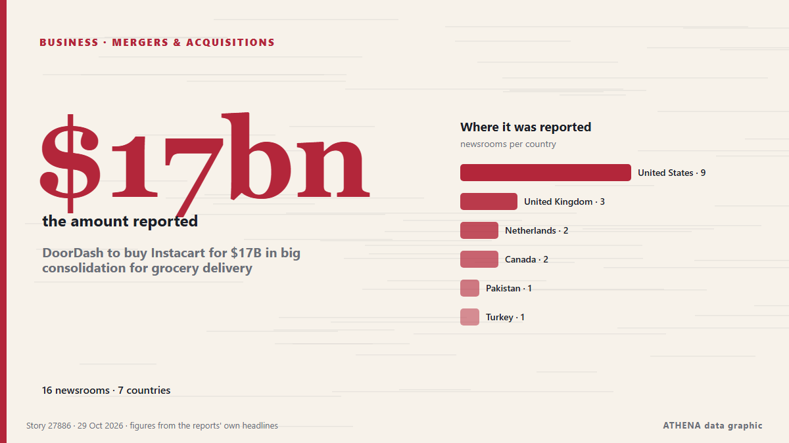

الأعمالالمبلغ: $17bn. 18 وسيلة إعلام في 7 دولة التغطية: تقارير كل 6 ساعات
DoorDash to buy Instacart for $17B in big consolidation for grocery delivery

DoorDash is gobbling up Instacart in a $17 billion acquisition that will supercharge its grocery delivery business. من The Canadian Press (via CityNews)
باختصار
نشرته بشكل مستقل 18 مصدرًا في 7 دول منذ 24 أكتوبر، وأول من نشره TechCrunch؛ والتغطية تتراجع. لا يجد ATHENA مؤشرات خطر في التغطية. الثقة 89٪ (مرتفعة)، وعدد المصادر المستقلة المؤكِّدة: 18، بمتوسط موثوقية للمصادر يبلغ 74٪.
لماذا يهم: تُظهر أخبار الشركات والاستثمار إلى أين تتجه رؤوس الأموال وأي القطاعات تكسب أو تخسر.
ما الذي تغيّر: 17 تقارير جديدة من 17 غرف أخبار خلال 24 ساعة حتى 29 أكتوبر.
تُعرض العناوين بالإنجليزية كما نُشرت.
نظرة سريعة
4.7الأهمية
0.0الخطر · منعدم
89%الثقة
اختير وقُيِّم وكُتب وفق منهجية ATHENA المنشورة. لا يتدخل أي محرر في الأحداث بعينها. كيف يُنتَج ›
| 24 Oct 16:30 UTC | 1 |
|---|---|
| 24 Oct 22:30 UTC | 0 |
| 25 Oct 04:30 UTC | 0 |
| 25 Oct 10:30 UTC | 0 |
| 25 Oct 16:30 UTC | 0 |
| 25 Oct 22:30 UTC | 0 |
| 26 Oct 04:30 UTC | 1 |
| 26 Oct 10:30 UTC | 0 |
| 26 Oct 16:30 UTC | 0 |
| 26 Oct 22:30 UTC | 0 |
| 27 Oct 04:30 UTC | 0 |
| 27 Oct 10:30 UTC | 1 |
| 27 Oct 16:30 UTC | 0 |
| 27 Oct 22:30 UTC | 0 |
| 28 Oct 04:30 UTC | 0 |
| 28 Oct 10:30 UTC | 0 |
| 28 Oct 16:30 UTC | 1 |
| 28 Oct 22:30 UTC | 0 |
| 29 Oct 04:30 UTC | 0 |
| 29 Oct 10:30 UTC | 13 |
| 29 Oct 16:30 UTC | 3 |
| 29 Oct 22:30 UTC | 1 |
لماذا هذه الأرقام
الأهمية
الامتداد — الدول التي تغطيه
الاتساع — وسائل إعلام مختلفة
الجِدّة
التنوع — المناطق وأنواع وسائل الإعلام
الخطر
—
الثقة
وسائل إعلام مستقلة
موثوقية المصادر
الدول
الاستقرار
اتساق التصنيف
التغطية — من نشر الخبر ومتى
العنوان كما نُشر · يفتح الأصل- TechCrunch · الولايات المتحدة · United StatesInstacart reportedly discussed selling itself with DoorDash and Uber
- The Next Web · هولندا · NetherlandsInstacart is exploring a sale, and Uber has already walked away
- Fast Company · الولايات المتحدة · United StatesDoorDash stock reacts on report that it wants to buy Instacart
- CNBC World · الولايات المتحدة · United StatesDoorDash to acquire Instacart for $17 billion
- New York Times Business · الولايات المتحدة · United StatesDoorDash to Buy Instacart for $17 Billion, Uniting 2 Delivery Giants
- Fast Company · الولايات المتحدة · United StatesWhy DoorDash is spending $17 billion to acquire Instacart
- The Independent · المملكة المتحدة · United KingdomDoorDash to buy Instacart for $17 billion in grocery delivery mega merger
- The Canadian Press (via CityNews) · كندا · CanadaDoorDash to buy Instacart for $17B in big consolidation for grocery delivery
- CBC News (alternative feed) · كندا · CanadaDoorDash to buy rival Instacart for $17B US as it bets on grocery delivery
- The Next Web · هولندا · NetherlandsDoorDash agrees to buy Instacart in a deal worth about $17bn
- TechCrunch · الولايات المتحدة · United StatesDoorDash to acquire Instacart for $17B
- Guardian Business · المملكة المتحدة · United KingdomDoorDash to buy Instacart for $17bn in major grocery delivery consolidation
- The Hill · الولايات المتحدة · United StatesDoorDash buying Instacart for $17B
- Express Tribune · باكستان · PakistanDoorDash strikes $17 billion deal for US rival Instacart in mega grocery delivery bet
- BBC Business · المملكة المتحدة · United KingdomDoorDash to buy Instacart in $17bn deal it says will expand customer options
- Retail Dive · الولايات المتحدة · United StatesDoorDash to buy Instacart for $17B
- Consumer Affairs · الولايات المتحدة · United StatesDoorDash is buying Instacart for $17 billion — will grocery delivery get cheaper?
- Anadolu Agency (English) · تركيا · TurkeyDoorDash to acquire grocery delivery firm Instacart in $17B deal
- Fortune · الولايات المتحدة · United StatesDoorDash offers $17 billion for Instacart: ‘the largest companies are only eating more and more of the pie’
- MyJoyOnline · غانا · GhanaDoorDash to buy Instacart in $17bn deal it says will expand customer options
- PBS NewsHour · الولايات المتحدة · United StatesDoorDash offers $17 billion for Instacart in what would be big grocery delivery consolidation